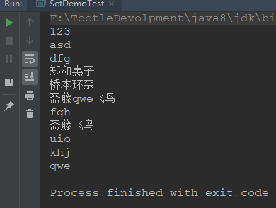
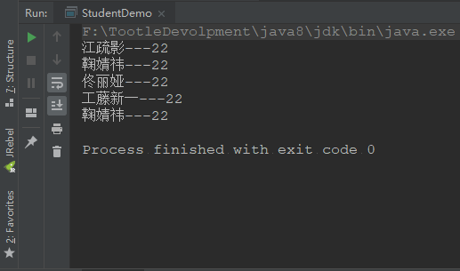
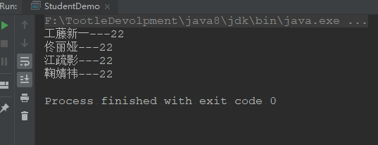
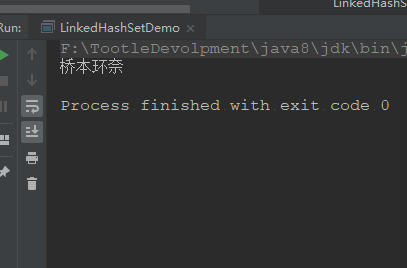
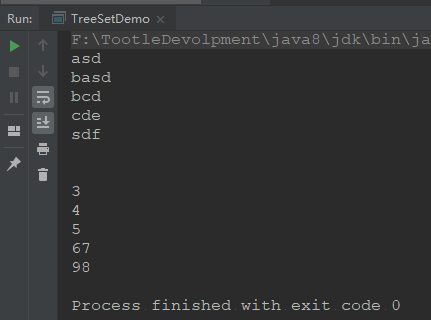
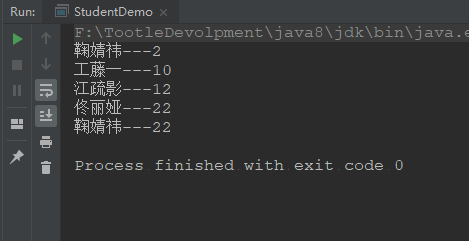
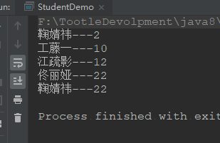
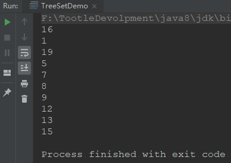
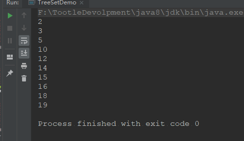
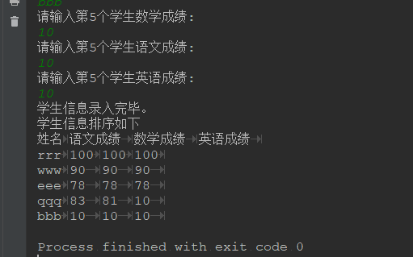

Set集合
一、Set集合
一个不包含重复元素的 collection。更确切地讲，set 不包含满足
e1.equals(e2)的元素对e1和e2，并且最多包含一个 null 元素。正如其名称所暗示的，此接口模仿了数学上的 set 抽象。
通过案例学Set
public class SetDemoTest {
public static void main(String[] args) {
//因为Set集合是一个接口，不能实例化
Set<String> set = new HashSet<>();
set.add("郑和惠子");
set.add("桥本环奈");
set.add("斋藤飞鸟");
set.add("郑和惠子");
set.add("桥本环奈");
set.add("斋藤飞鸟");
set.add("123");
set.add("斋藤qwe飞鸟");
set.add("qwe");
set.add("asd");
set.add("fgh");
set.add("斋藤飞鸟");
set.add("uio");
set.add("khj");
set.add("dfg");
//通过这里我们发现set集合是不支持重复元素的
//我们还能发现set集合的元素是无序的
for (String s : set) {
System.out.println(s);
}
}
}
二、通过源码分析Set集合为什么保证元素唯一性
小案例
再看源码分析前，我们先来看一个demo，代码如下；
public class Student {
private String name;
private int age;
public Student(String name, int age) {
this.name = name;
this.age = age;
}
public Student() {
}
public String getName() {
return name;
}
public void setName(String name) {
this.name = name;
}
public int getAge() {
return age;
}
public void setAge(int age) {
this.age = age;
}
}public class StudentDemo {
public static void main(String[] args) {
Set<Student> set = new HashSet<>();
Student s9 = new Student("工藤新一", 22);
Student s10 = new Student("江疏影", 22);
Student s11 = new Student("鞠婧祎", 22);
Student s13 = new Student("鞠婧祎", 22);
Student s12= new Student("佟丽娅", 22);
set.add(s9);
set.add(s10);
set.add(s11);
set.add(s12);
set.add(s13);
for (Student student : set) {
System.out.println(student.getName()+"---"+student.getAge());
}
}
}运行结果：

我们发现运行结果中并没有去除重复的元素，这时，我们就要进行源码分析
源码分析
通过源码分析我们就想到直接进入add方法，进入之后我们发现
boolean add(E e);没有一点特殊之处然后我们就想到Set是一个接口，既然在实例化时我们能通过new HashSet();来进行实例化，所以在HashSet中肯定有方法的实现，于是，我们找到HashSet中的add()方法，如下
public boolean add(E e) {
return map.put(e, PRESENT)==null;
}我们发现HashSet底层的add方法居然是map的put方法，但是到这之后我们并没有找到HashSet元素唯一性的原因，于是我们继续找，这是我们发现HashSet的构造方法如下
public HashSet() {
map = new HashMap<>();
}这时我们才发现，当我们执行
Set<String> set = new HashSet<>();的时候其实在底层，已经创建了一个新的HashMap集合，而且在map调用put方法时其实其中的map是
private transient HashMap<E,Object> map;所以偶们知道了，一切原因其实都在HashMap的put方法中，代码如下：
public V put(K key, V value) {
return putVal(hash(key), key, value, false, true);
}我们发现此时put方法中又调用了putVal方法，所以我们又找到putVal方法，所以整合如下。
在jdk1.7的时候，hashmap底层结构就是数组+链表的结构，如果发生冲突，即hashcode相同key也相同，但是value不同的话，那么就会放在底层数组的同一个下标处，官方话叫同一个桶内，以链表的形式保存。
但是在jdk1.8后就修改这么个存储方式，变成了数组+链表+红黑树的结构。我就暂时不讨论他红黑树部分是怎么实现的。我就先看看这个put（）方法具体是怎么执行的。
public V put(K key, V value) {
return putVal(hash(key), key, value, false, true);
}
static final int hash(Object key) {
int h;
//使用16位无符号右位移(>>>)异或(^)混合生成一个hash，替代key的hashCode，hash混合hashCode的高位和低位，以此来加大低位的随机性，用于减少碰撞。
return (key == null) ? 0 : (h = key.hashCode()) ^ (h >>> 16);
}
/**
* Implements Map.put and related methods
*
* @param hash hash for key
* @param key the key
* @param value the value to put
* @param onlyIfAbsent if true, don't change existing value(put 传 false)
* @param evict if false, the table is in creation mode.(put 传 true)
* @return previous value, or null if none
*/
final V putVal(int hash, K key, V value, boolean onlyIfAbsent, boolean evict) {
Node<K,V>[] tab; //缓存底层数组用,都是指向一个地址的引用
Node<K,V> p; //插入数组的桶i处的键值对节点
int n; //底层数组的长度
int i; //插入数组的桶的下标
//刚开始table是null或空的时候，初始化个默认的table；为tab和n赋值，tab指向底层数组，n为底层数组的长度
if ((tab = table) == null || (n = tab.length) == 0){
n = (tab = resize()).length;
}
//(n - 1) & hash：根据hash值算出插入点在底层数组的桶的位置，即下标值；为p赋值，也为i赋值（不管碰撞与否，都已经赋值了）
//如果在数组上，没有发生碰撞，即当前要插入的位置上之前没有插入过值，则直接在此位置插入要插入的键值对
if ((p = tab[i = (n - 1) & hash]) == null){
tab[i] = newNode(hash, key, value, null);//插入的节点的next属性是null
} else { //发生碰撞，即当前位置已经插入了值
Node<K,V> e; //中间变量吧，跟冒泡排序里面的那个中间变量似的，起到个值交换的作用
K k; //同上
//hash值相同，key也相同，那么就是更新这个键值对的值。同 jdk 1.7
if (p.hash == hash && ((k = p.key) == key || (key != null && key.equals(k)))){ //注意在这个if内【e != null】
e = p;//这地方，e = p 他们两个都是指向数组下标为i的地方，在这if else if else结束之后，再把节点的值value给更新了
} else if (p instanceof TreeNode){ //这个树方法可能会返回null。
//jdk 1.8引入了红黑树来处理碰撞，上面判断p的类型已经是树结构了，
e = ((TreeNode<K,V>)p).putTreeVal(this, tab, hash, key, value);//如果是，则走添加树的方法。
} else { //注意在这个else内，当为添加新节点时，【e == 】；更新某个节点时，就不是null
for (int binCount = 0; ; ++binCount) {//还未形成树结构，还是jdk 1.7的链表结构
//差别就是1.7:是头插法，后来的留在数组上，先来的链在尾上；1.8:是先来的就留在数组上，后来的链在尾上
//判断p.next是否为空，同时为e赋值，若为空，则p.next指向新添加的节点，这是在链表长度小于7的时候
if ((e = p.next) == null) {
//这个地方有个不好理解的地方：在判断条件里面，把e指向p.next，也就是说现在e=null而不是下下一行错误的理解。
//这也就解释了更新的时候，返回oldValue，新建的时候，是不在那地方返回的。
p.next = newNode(hash, key, value, null);//e = p.next,p.next指向新生成的节点，也就是说e指向新节点（错误）
//对于临界值的分析：
//假设此次是第六次，binCount == 6,不会进行树变，当前链表长度是7；下次循环。
//binCount == 7，条件成立，进行树变，以后再put到这个桶的位置的时候，这个else就不走了，走中间的那个数结构的分叉语句啦
//这个时候，长度为8的链表就变成了红黑树啦
if (binCount >= TREEIFY_THRESHOLD - 1){// -1 for 1st //TREEIFY_THRESHOLD == 8
treeifyBin(tab, hash);
}
break;//插入新值或进行树变后，跳出for循环。此时e未重定向，还是指向null，虽然后面p.next指向了新节点。
//但是，跟e没关系。
}
//如果在循环链表的时候，找到key相同的节点，那么就跳出循环，就走不到链表的尾上了。
// e已经在上一步已经赋值了，且不为null,也会跳出for循环，会在下面更新value的值
if (e.hash == hash && ((k = e.key) == key || (key != null && key.equals(k)))){
break;
}
//这个就是p.next也就是e不为空，然后，还没有key相同的情况出现，那就继续循环链表，
// p指向p.next也就是e，继续循环，继续，e=p.next
p = e;
//直到p.next为空，添加新的节点；或者出现key相等，更新旧值的情况才跳出循环。
}
}
//经过上面if else if else之后，e在新建节点的时候，为null；更新的时候，则被赋值。在树里面处理putTreeVal（）同样如此，
if (e != null) { // existing mapping for key//老外说的对，就是只有更新的时候，才走这，才会直接return oldValue
V oldValue = e.value;
//onlyIfAbsent 这个在调用hashMap的put()的时候，一直是false，那么下面更新value是肯定执行的
if (!onlyIfAbsent || oldValue == null){
e.value = value;
}
afterNodeAccess(e);
return oldValue;
}
}
++modCount;
if (++size > threshold){
resize();
}
afterNodeInsertion(evict);
return null;
}我们通过源码发现，其实比较的时hashcode和equals方法，所以我们如果不重写hashcode和equals方法，那么比较的就是Object的hashcode方法，因为我们每个都是创建对象才赋值的，不同对象地址不同，hashcode肯定不同，所以就没有达到去重的目的，下面是重写hashcode和equals方法之后的代码：
public class Student {
private String name;
private int age;
public Student(String name, int age) {
this.name = name;
this.age = age;
}
public Student() {
}
public String getName() {
return name;
}
public void setName(String name) {
this.name = name;
}
public int getAge() {
return age;
}
public void setAge(int age) {
this.age = age;
}
@Override
public boolean equals(Object o) {
if (this == o) return true;
if (!(o instanceof Student)) return false;
Student student = (Student) o;
return getAge() == student.getAge() &&
getName().equals(student.getName());
}
@Override
public int hashCode() {
return Objects.hash(getName(), getAge());
}
}public class StudentDemo {
public static void main(String[] args) {
Set<Student> set = new HashSet<>();
Student s9 = new Student("工藤新一", 22);
Student s10 = new Student("江疏影", 22);
Student s11 = new Student("鞠婧祎", 22);
Student s13 = new Student("鞠婧祎", 22);
Student s12= new Student("佟丽娅", 22);
set.add(s9);
set.add(s10);
set.add(s11);
set.add(s12);
set.add(s13);
for (Student student : set) {
System.out.println(student.getName()+"---"+student.getAge());
}
}
}运行结果：

三、LinkedHashSet集合的特点
具有可预知迭代顺序的
Set接口的哈希表和链接列表实现。此实现与HashSet的不同之外在于，后者维护着一个运行于所有条目的双重链接列表。
所以我们知道LinkedHashSet具有set和HashSet的所有功能
public class LinkedHashSetDemo {
public static void main(String[] args) {
LinkedHashSet<String> linkedHashSet = new LinkedHashSet<>();
linkedHashSet.add("桥本环奈");
linkedHashSet.add("桥本环奈");
linkedHashSet.add("桥本环奈");
linkedHashSet.add("桥本环奈");
for (String s : linkedHashSet) {
System.out.println(s);
}
}
}运行结果：

而且通过源代码我们发现：
public class LinkedHashSet<E>
extends HashSet<E>
implements Set<E>, Cloneable, java.io.Serializable{
...
} LinkedHashSet的父亲时HashSet并且实现了Set集合接口，克隆接口以及序列化接口。
四、TreeSet
基于
TreeMap的NavigableSet实现。使用元素的自然顺序对元素进行排序，或者根据创建 set 时提供的Comparator进行排序，具体取决于使用的构造方法。
这也就是说，TreeSet可以按照一定的顺序进行排序，线路代码再看，
public class TreeSetDemo {
public static void main(String[] args) {
TreeSet<String> treeSet = new TreeSet<>();
TreeSet<Integer> treeSet1 = new TreeSet<>();
treeSet.add("asd");
treeSet.add("sdf");
treeSet.add("basd");
treeSet.add("bcd");
treeSet.add("cde");
treeSet1.add(98);
treeSet1.add(67);
treeSet1.add(4);
treeSet1.add(3);
treeSet1.add(5);
for (String s : treeSet) {
System.out.println(s);
}
System.out.println();
System.out.println();
for (Integer i : treeSet1) {
System.out.println(i);
}
}
}
由上面的运行结果和程序可知，我们不自己设置排序规则的话，TreeSet的排序是按照他自己一些规则进行排序的。TreeSet的排序一共有两种：
自然排序
比较器排序（Comparator）
通过源码分析排序实现的原理：
我们上面说过TreeSet是基于 TreeMap 的 NavigableSet 实现。我们通过API发现NavigableSet是一个接口，且NavigableSet也是由TreeSet集合进行实现，所以我们又回到TreeSet集合中，我们又进入到TreeSet的add方法中，这是我们发现TreeSet的add方法其实是调用NavigableMap中的put方法，而我们发现NavigableMap也同样是一个接口，且实现类中含有TreeMap，所以我们到这大概知道了，Treeset中的add方法其实底层是TreeMap的put方法，然后我们找到put方法代码如下：
interface Collection{...}
interface Set extends Collection{...}
interface NavigableMap{...}
class TreeMap implements NavigableMap{
private transient Entry<K,V> root;
private final Comparator<? super K> comparator;
//有比较器的构造方法
public TreeMap(Comparator<? super K> comparator) {
this.comparator = comparator;
}
//没有比较器的构造方法
public TreeMap() {
comparator = null;
}
public V put(K key, V value) {
//根，因为我们通过API发现TreeMap是基于红黑树的NavigableMap实现，这里是在造根节点
Entry<K,V> t = root;
if (t == null) {
compare(key, key); // type (and possibly null) check
root = new Entry<>(key, value, null);
size = 1;
modCount++;
return null;
}
int cmp;
//父节点
Entry<K,V> parent;
// split comparator and comparable paths
//通过构造器，来判断是否走Comparator，如果没有用相应的构造方法，则不走这个方法
Comparator<? super K> cpr = comparator;
//先判断比较器是否为null
if (cpr != null) {
do {
//和无参构造原理一样，小了放左边，大了放右边
parent = t;
cmp = cpr.compare(key, t.key);
if (cmp < 0)
t = t.left;
else if (cmp > 0)
t = t.right;
else
return t.setValue(value);
} while (t != null);
}
//如果我们使用的是无参构造，那么就会走这里
else {
//如果key为空则抛出空指针异常
if (key == null)
throw new NullPointerException();
//注解的意思是，抑制没有进行类型检查操作的警告(暂时不用管)
@SuppressWarnings("unchecked")
//我们发现这个和上面的Comparator好像，但又不是，
//此接口强行对实现它的每个类的对象进行整体排序。这种排序被称为类的自然排序，类的 compareTo 方法被称为它的自然比较方法。
//这里的key其实是被强制转型为Comparable类型，而且我们的Integer和String都实现了这个接口，所以，这里其实是向上转型
Comparable<? super K> k = (Comparable<? super K>) key;
do {
//把t赋值给parent，也就是Entry<K,V> parent;
parent = t;
//比较的返回值进行判断，负整数、零或正整数，根据此对象是小于、等于还是大于指定对象。
cmp = k.compareTo(t.key);
if (cmp < 0)
t = t.left;
else if (cmp > 0)
t = t.right;
else
return t.setValue(value);
} while (t != null);
}
Entry<K,V> e = new Entry<>(key, value, parent);
if (cmp < 0)
parent.left = e;
else
parent.right = e;
fixAfterInsertion(e);
size++;
modCount++;
return null;
}
}
class TreeSet implements Set{
private transient NavigableMap<E,Object> m;
public TreeSet() {
this(new TreeMap<E,Object>());
}
public boolean add(E e) {
return m.put(e, PRESENT)==null;
}
}所以，真正的比较是依赖于compareTo()方法，而这个方法是定义在Comparable里面的。所以，你想要重写该方法，就需要现实现Comparable接口。这个接口表示的就是自然排序。
请转到 ：TreeSet数据结构
五、小案例Demo
下面实现一个案例，TreeSet实现自定义对象的存储及排序(建议自己先写一遍，再看代码)
代码如下：
//自然排序
public class Student implements Comparable<Student> {
private String name;
private int age;
public Student(String name, int age) {
this.name = name;
this.age = age;
}
public Student() {
}
public String getName() {
return name;
}
public void setName(String name) {
this.name = name;
}
public int getAge() {
return age;
}
public void setAge(int age) {
this.age = age;
}
@Override
public int compareTo(Student s) {
int n = this.age - s.age;
//其中"(a<b)?a:b"是一个"条件表达式",它是这样执行的:如果a<b为真,则表达式取a值,否则取b值
int m = n == 0 ? this.name.compareTo(s.name) : n;
return m;
}
}public class StudentDemo {
public static void main(String[] args) {
TreeSet<Student> treeSet = new TreeSet<>();
Student s9 = new Student("工藤一", 10);
Student s10 = new Student("江疏影", 12);
Student s11 = new Student("鞠婧祎", 2);
Student s13 = new Student("鞠婧祎", 22);
Student s12= new Student("佟丽娅", 22);
Student s14= new Student("佟丽娅", 22);
treeSet.add(s9);
treeSet.add(s10);
treeSet.add(s11);
treeSet.add(s12);
treeSet.add(s13);
treeSet.add(s14);
for (Student student : treeSet) {
System.out.println(student.getName()+"---"+student.getAge());
}
}
}
运行结果如下：

通过这个代码，我们知道，
- 对象元素不能直接排序，需要重写compareTo
- 如果不重写，代码就会因为不知道按什么方法排序而报错
- 重写compareTo方法时，我们应该注意元素唯一性的标准，否则会造成一些Bug。
比较器排序
代码：
public class MyComparator implements Comparator<Student> {
@Override
public int compare(Student s1, Student s2) {
int n = s1.getAge() - s2.getAge();
//其中"(a<b)?a:b"是一个"条件表达式",它是这样执行的:如果a<b为真,则表达式取a值,否则取b值
int m = n == 0 ? s1.getName().compareTo(s2.getName()) : n;
return m;
}
}public class Student {
private String name;
private int age;
public Student(String name, int age) {
this.name = name;
this.age = age;
}
public Student() {
}
public String getName() {
return name;
}
public void setName(String name) {
this.name = name;
}
public int getAge() {
return age;
}
public void setAge(int age) {
this.age = age;
}
}public class StudentDemo {
public static void main(String[] args) {
//如果一个方法的参数是接口那么真正要的是接口实现类对象
//还可以使用匿名内部类方法实现
//TreeSet<Student> treeSet = new TreeSet<>(new MyComparator());
//使用匿名内部类就不需要新创建一个类
TreeSet<Student> treeSet = new TreeSet<Student>(new Comparator<Student>(){
@Override
public int compare(Student s1, Student s2) {
int n = s1.getAge() - s2.getAge();
//其中"(a<b)?a:b"是一个"条件表达式",它是这样执行的:如果a<b为真,则表达式取a值,否则取b值
int m = n == 0 ? s1.getName().compareTo(s2.getName()) : n;
return m;
}
});
//lambda表达式
/*TreeSet<Student> treeSet1 = new TreeSet<Student>((s1, s2) -> {
int n = s1.getAge() - s2.getAge();
int m = n == 0 ? s1.getName().compareTo(s2.getName()) : n;
return m;
});*/
Student s9 = new Student("工藤一", 10);
Student s10 = new Student("江疏影", 12);
Student s11 = new Student("鞠婧祎", 2);
Student s13 = new Student("鞠婧祎", 22);
Student s12= new Student("佟丽娅", 22);
Student s14= new Student("佟丽娅", 22);
treeSet.add(s9);
treeSet.add(s10);
treeSet.add(s11);
treeSet.add(s12);
treeSet.add(s13);
treeSet.add(s14);
for (Student student : treeSet) {
System.out.println(student.getName()+"---"+student.getAge());
}
}
}运行结果：

Set集合随机生成10个，100以内的数
public class TreeSetDemo {
public static void main(String[] args) {
HashSet<Integer> i = new HashSet<>();
Random r = new Random();
while (i.size() < 10) {
int x = r.nextInt(20) + 1;
i.add(x);
}
for (Integer integer : i) {
System.out.println(integer);
}
}
}
public class TreeSetDemo {
public static void main(String[] args) {
TreeSet<Integer> i = new TreeSet<>();
Random r = new Random();
while (i.size() < 10) {
int x = r.nextInt(20) + 1;
i.add(x);
}
for (Integer integer : i) {
System.out.println(integer);
}
}
}运行结果：

使用TreeSet集合输入5位同学语文，英语，数学成绩，并按照从总分高到低进行排序
public class Student {
private String name;
private int Chinese;
private int Math;
private int English;
public Student() {
}
public Student(String name, int chinese, int math, int english) {
this.name = name;
Chinese = chinese;
Math = math;
English = english;
}
public String getName() {
return name;
}
public void setName(String name) {
this.name = name;
}
public int getChinese() {
return Chinese;
}
public void setChinese(int chinese) {
Chinese = chinese;
}
public int getMath() {
return Math;
}
public void setMath(int math) {
Math = math;
}
public int getEnglish() {
return English;
}
public void setEnglish(int english) {
English = english;
}
@Override
public boolean equals(Object o) {
if (this == o) return true;
if (!(o instanceof Student)) return false;
Student student = (Student) o;
return getChinese() == student.getChinese() &&
getMath() == student.getMath() &&
getEnglish() == student.getEnglish() &&
getName().equals(student.getName());
}
@Override
public int hashCode() {
return Objects.hash(getName(), getChinese(), getMath(), getEnglish());
}
//计算总分，写在这个地方可提高方法复用性
public int getSum(){
int sum = this.Chinese + this.English + this.Math;
return sum;
}
}public class StudentDemo {
public static void main(String[] args) {
TreeSet<Student> treeSet = new TreeSet<Student>((s1, s2) -> {
//其中"(a<b)?a:b"是一个"条件表达式",它是这样执行的:如果a<b为真,则表达式取a值,否则取b值.
int num = s2.getSum() - s1.getSum();
int num1 = num == 0 ? s1.getChinese() - s2.getChinese() : num;
int num2 = num1 == 0 ? s1.getEnglish() - s2.getEnglish() : num1;
int num3 = num2 == 0 ? s1.getMath() - s2.getMath() : num2;
int num4 = num3 == 0 ? s1.getName().compareTo(s2.getName()) : num3;
return num4;
});
System.out.println("学生信息录入开始：");
for (int i = 1; i < 6; i++) {
Scanner sc = new Scanner(System.in);
System.out.println("请输入第" + i + "个学生姓名:");
String name = sc.nextLine();
System.out.println("请输入第" + i + "个学生数学成绩:");
int math = sc.nextInt();
System.out.println("请输入第" + i + "个学生语文成绩:");
int chinese = sc.nextInt();
System.out.println("请输入第" + i + "个学生英语成绩:");
int english = sc.nextInt();
Student student = new Student();
student.setName(name);
student.setMath(math);
student.setChinese(chinese);
student.setEnglish(english);
treeSet.add(student);
}
System.out.println("学生信息录入完毕。");
System.out.println("学生信息排序如下");
System.out.println("姓名\t语文成绩\t数学成绩\t英语成绩\t");
for (Student student : treeSet) {
System.out.println(student.getName()+"\t"+student.getChinese()+"\t"+student.getMath()+"\t"+student.getEnglish()+"\t");
}
}
}运行结果：

总结：
Set集合
Set集合特点
- 唯一，无序
HashSet集合
底层结构是hash表（是一个元素为链表的数组）
Hash表底层依赖两个方法HashCode和Equals
执行顺序：
- 首先比较Hash值是否相同
- 相同，比较Equals方法
- 不同，直接添加到集合中
如何保证元素的唯一性
HashCode和Equals方法
TreeSet集合
底层结构是红黑树(平衡二叉树)
如何保证元素的唯一性，红黑树（元素相同则无法添加进集合中）
如何保证元素有序
自然排序（元素具备具备比较性）
因为例如Integer，String等都已实现Comparable接口，即让元素所属的类实现Comparable接口中的compareTo方法，来实现自然排序
比较器排序
让集合构造方法接收Comparator的实现类对象